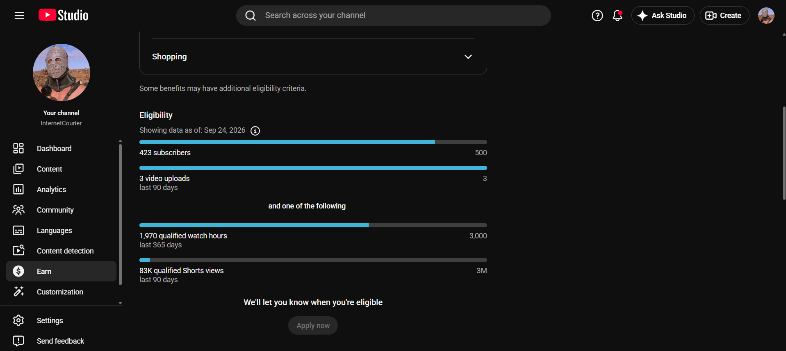
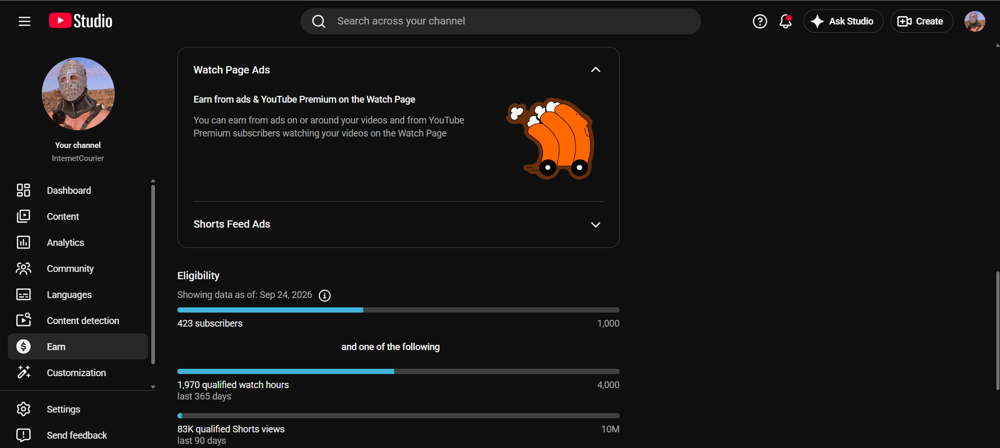
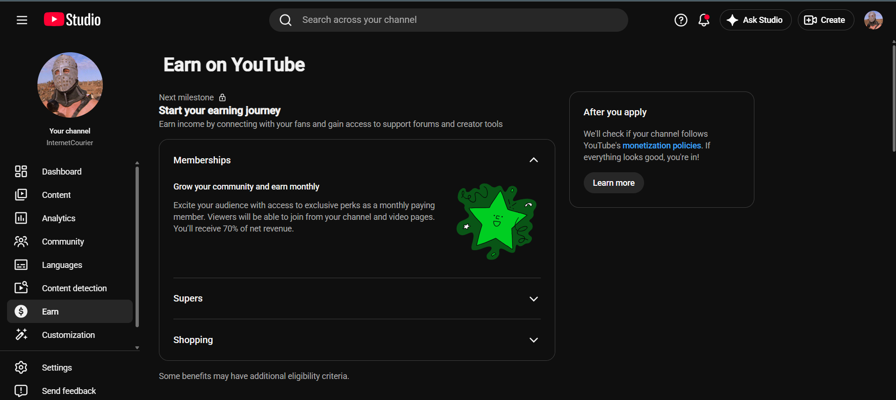
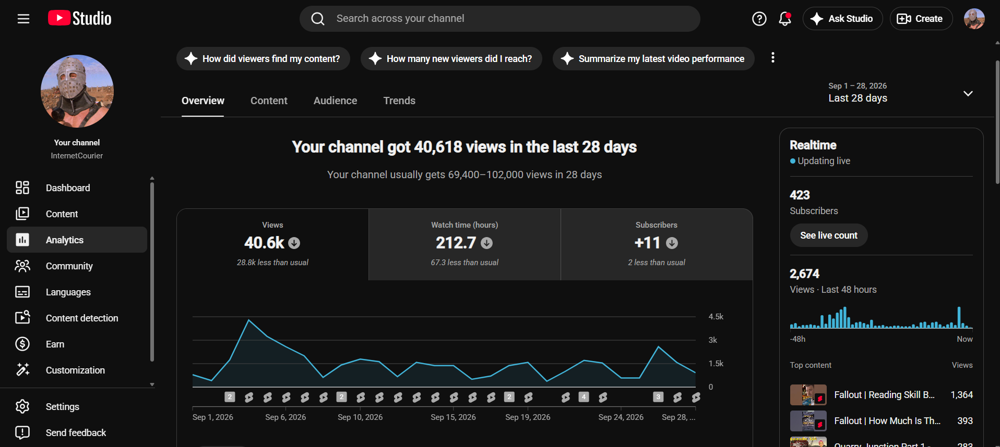

How I started making videos with an iPod taped to a chair, then returned with a laptop, free tools and Fallout: New Vegas.
Starting with whatever you already have - Recently, I have started properly creating and uploading content to YouTube. It has been just over a year since I uploaded the first real episode of my Fallout: New Vegas Let’s Play, although I say “first real episode” because this was far from my first attempt at becoming a YouTuber. Like a lot of people growing up alongside YouTube, there was a time when becoming—not necessarily an influencer, but simply a YouTuber—seemed like something anybody could do from the comfort of their own home with minimal effort. You just recorded yourself playing a game, uploaded it and waited for people to find it. At least, that was how simple it looked from the outside. As an annoying child and then an awkward teenager, I tried several times to make gaming videos. Unfortunately, I never seemed to have the right equipment, knowledge or understanding of how any of it worked. Some of my earliest attempts involved using an iPod Touch taped to the back of a chair as a camera. There was minimal commentary, if any at all, absolutely no editing and no real thought given to what the videos should be called. I would upload the raw files with completely arbitrary titles that nobody would ever think to search for or click on. I was creating videos in the loosest possible sense of the word, but the interest was there. For my thirteenth birthday, I begged for a game-capture device. I was hoping for something along the lines of an Elgato, but instead I received a strange silver peanut-shaped USB capture device, accompanied by a tangled mess of RCA cables designed for older CRT televisions and no useful instruction manual. I was still grateful and excited to finally have a capture device, but working out how to use it was another matter entirely. After a lot of confusion, I eventually managed to capture around eight to ten minutes of full-screen gameplay at a time. I mostly recorded the usual games I was playing then: Call of Duty: Zombies, Minecraft survival and online sessions where I was messing around with friends.
The capture device had to run through my dad’s already outdated MacBook. Trying to record the gameplay, play the game, talk and make sure the computer had not crashed or overheated became a lot to keep track of at once. Nevertheless, I somehow continued recording and uploading videos while pushing that poor MacBook beyond anything it was reasonably expected to survive.
None of those early attempts really went anywhere. I did not understand editing, thumbnails, titles, scheduling or how people were supposed to discover my videos. The equipment fought me at every turn, and eventually I stopped.
The interest in making videos, however, never completely disappeared.
Starting again from scratch
After graduating from university, I spent some time unemployed and wanted something creative to fill my time. I was already playing Fallout: New Vegas, a game I knew and loved, so I thought: why not try recording and uploading videos again, but make a proper attempt this time?
I had a better understanding of computers than I did as a child, better access to software and a laptop capable of handling the basic process. I still did not have professional recording equipment, paid editing programs, a studio or a team helping me.
I had my laptop, a YouTube account and a collection of free editing tools available online.
That was enough to start.
InternetCourier was a completely new channel. It had no uploads, no viewing history and no existing audience waiting for the first episode. I was genuinely beginning again from scratch.
For my first recording session, I played through the beginning of Fallout: New Vegas for around one or two hours. This covered the game’s introduction, character creation and the opening stages of the story. I then took that longer recording and cut it into approximately four individual episodes.
I created a separate thumbnail for each one, uploaded them to the new channel and scheduled them to release around three or four days apart. That gave me the beginnings of a series without requiring me to record and finish a completely new video every few days.
It was not the launch of a professional media empire. It was one person, one laptop, some free software and a game I already wanted to play.
But this time, I kept going.
Where the channel is now
The counter above shows YouTube’s current public figure. In the YouTube Studio screenshots taken on 24 September 2026, InternetCourier had 423 subscribers and was moving towards 500. When I first drafted this article, the count was 418. Seeing that number move after starting from an empty channel still feels significant.
Compared with the largest channels on YouTube, 423 might not sound enormous. Compared with beginning on an entirely empty channel, however, it means that hundreds of real people have chosen to follow something I created. It also means that the first major YouTube Partner Programme milestone is now beginning to feel achievable. I am not pretending that reaching those figures will instantly become a full-time income or completely change my life. What they represent is progress: moving from repeatedly trying and failing to make videos as a child to having an active channel with a gradually growing audience.



You do not need the perfect setup
The main thing I have learned is that you do not need to wait until you own the perfect equipment. To begin, you need a YouTube account, an internet connection, something capable of recording and an idea of what you would like to make. That could mean gaming videos, reviews, reactions, vlogs, podcasts, tutorials, animations, music, short films, educational videos or practically anything else. If you have access to expensive equipment, that is obviously useful. A good microphone, powerful computer, capture card and professional editing software can make parts of the process easier. They cannot, however, make the first video for you. It is better to start with something you already know or genuinely enjoy. Choose a subject that gives you something to say, even if you are initially saying it to almost nobody. I began again with Fallout: New Vegas because I already loved the game. I could talk naturally while playing it, and its quests, characters and strange situations gave me plenty of ideas for videos beyond the basic gameplay. My current setup is still in no way professional. It is probably only a few levels above a potato on a stick with a microphone attached to it, and some parts of it might make people question my sanity. However, it is quick enough for me to set up, the recurring problems are generally manageable and, most importantly, it works.
How I currently make my videos
My current system is divided between episodic long-form content and YouTube Shorts. When I have enough time, I record my Let’s Play footage in batches. A longer session can then be divided into several individual episodes, which I edit separately. Once an episode is complete, I upload it through YouTube Studio and schedule its release. If the previous batch has finished releasing, I try to prepare the next episode without placing an unnecessarily strict deadline on myself. This system gives me room to work around everything else happening in my life. Consistency is useful, but I do not think it should mean forcing yourself to follow an unrealistic schedule until you no longer enjoy making anything. My main channel, InternetCourier, is where I upload my Fallout: New Vegas Let’s Plays, longer Fallout edits and Fallout-style radio compilations. I want the Let’s Play to feel like more than a collection of unedited gameplay recordings. For each episode, I look at its main quest, location, enemy or memorable event and try to create an introduction that connects with it. I often use clips from programmes I watched growing up, including Family Guy, American Dad!, Futurama, The Simpsons and Beavis and Butt-Head. I search for funny scenes that parallel something happening in the game, then edit those scenes to make the characters appear as though they are living inside the Fallout universe. The process can involve removing a character from the original background, placing them over Fallout: New Vegas scenery and compositing other assets around them. I might replace an object with a Pip-Boy, weapon or bottle of Nuka-Cola, or add creatures and characters from the game. I try to make the dialogue and action lead naturally into the episode. Somebody running from a monster can be placed in Quarry Junction and chased by Deathclaws before the edit cuts into my actual gameplay. Examples include Homer Simpson driving through New Vegas and reading the billboards and Beavis and Butt-Head visiting Hoover Dam. These clips give individual episodes their own identity. Some can also be cut out and uploaded separately as Shorts, allowing people to discover the channel without first committing to an entire Let’s Play episode.
Making the thumbnails
I create my thumbnails using Canva, background-removal tools and image compositing. The overall design comes from a template I made near the beginning of the channel. I generally retain the same basic layout while changing the episode number, title, characters and featured location. As time has passed and I have gained more experience, the thumbnails have developed a cleaner and more defined style. I now generally create three thumbnail versions for each episode. YouTube can test different thumbnails and compare how viewers respond to them, so this gives me a chance to see which design works best. I can also experiment with different versions of the title. They normally follow the same recognisable format, with variations based on the episode’s location, quest or main event. I did not know all of this before creating the channel. I learned it gradually by making things, looking at the results and trying to improve the next upload.
Using YouTube Studio without becoming obsessed with statistics

YouTube Studio allows me to upload and schedule videos, manage titles and descriptions, test thumbnails, respond to comments and see how viewers are finding the channel. It shows information such as views, watch time, click-through rates, audience retention and returning viewers. This information can be useful for understanding what worked, where people stopped watching and which videos brought new viewers to the channel. At the same time, constantly watching the numbers can make it difficult to appreciate the progress you have already made. Some videos might receive very few views. Others may unexpectedly reach thousands of people. One successful Short does not guarantee that the next upload will perform in the same way. There is some luck involved, but building a collection of videos gives people more opportunities to discover you and more reasons to return. I also try to respond when somebody leaves a genuine comment. The person watching might only see one reply, but from my side, each interaction is evidence that the video reached an actual human being. That matters, especially while building a small channel. My personal channel and future plans: Alongside InternetCourier, I have a personal channel called @Bootleg-Edit. I use that channel more casually, uploading whenever I create an unrelated comedy edit or have a random idea that does not fit the Fallout focus of InternetCourier. I do not currently upload there as regularly, but I would like to develop it further. In the future, I want to continue expanding both channels. InternetCourier can remain the home of my gaming content, Fallout edits, radio compilations and continuing New Vegas series. Bootleg-Edit can give me room to experiment with other types of editing and more personal creative projects. Creating videos has already helped me maintain and expand my technical skills. I have learned more about editing, compositing, thumbnails, content planning, scheduling and using different software. I am also gradually developing my own style rather than simply uploading raw gameplay and hoping somebody discovers it. I still have a lot to learn, and that is part of the reason I want to document the journey as it happens. Everyone has to begin somewhere This is not a guide written by somebody looking back from ten million subscribers. I am still in the middle of the process. The September 2026 screenshot shows 423 subscribers. My next target is 500. After that, I want to keep building towards 1,000 subscribers, the required watch time and full acceptance into the YouTube Partner Programme. There is no guarantee that I will reach every target quickly, but the channel has already gone further than any of my childhood attempts. What began with an iPod taped to a chair, a silver peanut full of tangled cables and an overheating MacBook has finally become something with a small but genuine following. If you are thinking about starting a channel but feel that you do not have enough money, knowledge or equipment, use whatever you currently have and make whatever you can. Your first videos probably will not look exactly how you imagined them. Mine certainly did not. You might struggle with the equipment, upload something nobody watches or stop and start several times before anything sticks. That does not mean those attempts were pointless. Sometimes the thing you tried and failed to do years ago comes back when you finally have just enough knowledge, just enough equipment and the same enthusiasm you had at the beginning. You do not have to start perfectly. You only have to start somewhere.